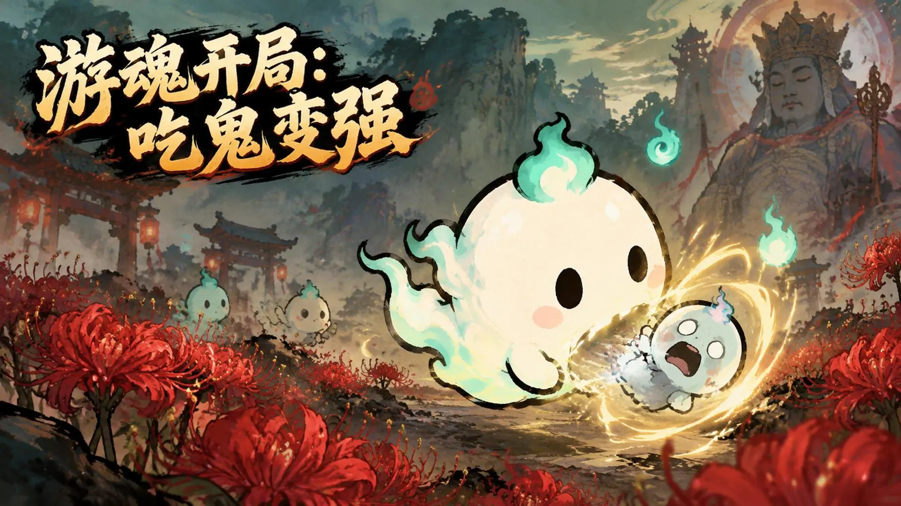

游魂开局，吞鬼变强
从一缕小游魂开始，在吞鬼与成长的旅途中，寻找属于自己的变强之路。

手机扫码前往 TapTap
游魂开局：吃鬼变强彼岸花开，鬼火浮游。
穿过幽冥山谷，让小小游魂一步步变强。
从一缕小游魂开始，在吞鬼与成长的旅途中，寻找属于自己的变强之路。
古老牌楼隐于山雾，彼岸花铺满小径，幽绿鬼火照亮充满东方幻想的幽冥世界。
圆滚滚的游魂与各色小鬼相遇，灵动表情和绚丽吞噬光效，让幽冥之旅多一分奇趣。
一瞥鬼火与彼岸花的幽冥世界
以上为游戏宣传美术，实际画面以游戏内为准。
手机扫码 · 前往 TapTap